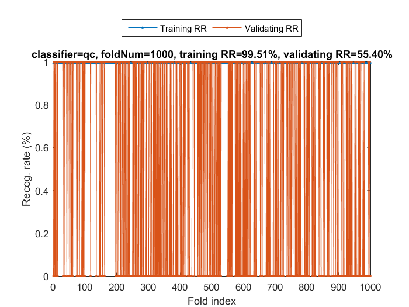
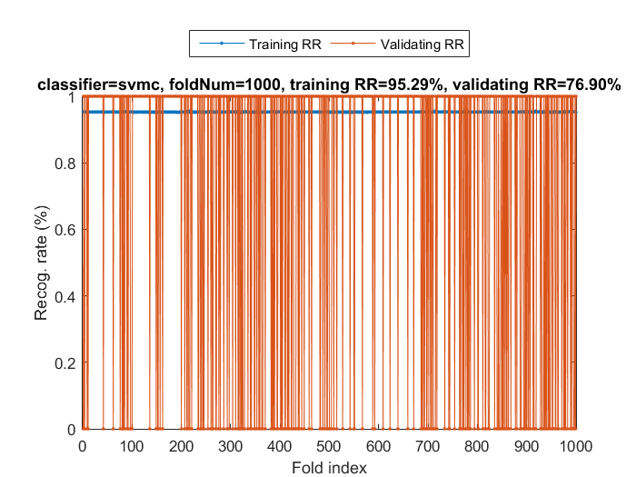
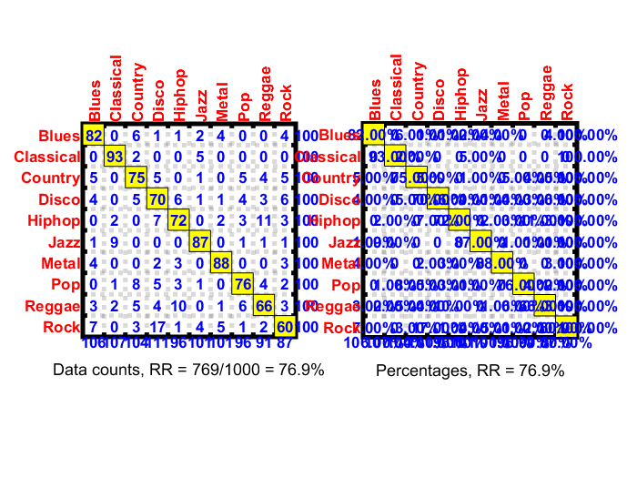

Music Genre Classification via Acoustic Features
In this application example, we shall explore the use of several classification schemes for genre classification of audio music. Here we should only use the basic acoustic feature called MFCC (mel-scale frequency cepstral coefficient), which is the most commonly used feature for speech and speaker recognition.
Contents
Download the dataset
The audio music dataset used here is "GTZAN Genre Collection", which is prepared by Prof. George Tzanetakis at the University of Victoria. This dataset was used for the well known paper in genre classification "Musical genre classification of audio signals" by G. Tzanetakis and P. Cook in IEEE Transactions on Audio and Speech Processing, 2002. The dataset consists of 1000 audio tracks each 30 seconds long. It contains 10 genres, each represented by 100 tracks. These genres are:
- Blue
- Classic
- Country
- Disco
- Hiphop
- Jazz
- Metal
- Pop
- Raegae
- Rock
You can download the dataset at Marsyas' home.
Feature Extraction
After downloading the dataset, you can read all files and compute MFCC as follows:
musicCorpusDir='e:/dataSet/musicGenreClassification/GTZAN'; % Replace this one with the path of the dataset opt=fileList('defaultOpt'); opt.extName='au'; opt.mode='recursive'; auSet=fileList(musicCorpusDir, opt); fileNum=length(auSet); if fileNum==0, error('Cannot find any audio files in %s!', musicCorpusDir); end outputName=unique({auSet.parentDir}); tic for i=1:fileNum auFile=auSet(i).path; [y, fs]=audioread(auFile); mfccOpt=mfccOptSet(fs); mfccOpt.frameSize=1024; mfccOpt.overlap=512; auSet(i).mfcc=wave2mfcc(y, fs, mfccOpt); auSet(i).output=find(strcmp(outputName, auSet(i).parentDir)); end toc
Elapsed time is 1096.893713 seconds.
It will take a while to read all 1000 music files and convert them to MFCC. Note that each frame is converted into an MFCC vector of 13 elements. Thus each song is represented by an MFCC matrix of 13 by n, where n is the number of frames. For simplicity, we shall use a fixed-length feature vector to represent a song. This is achieved by taking the mean, standard deviation, min., and max. of each dimenrion of the MFCC matrix of a song, as shown next:
for i=1:fileNum fea=[]; fea(end+1,:)=mean(auSet(i).mfcc, 2); % Mean fea(end+1,:)=var(auSet(i).mfcc, 1, 2); % Standard deviation fea(end+1,:)=min(auSet(i).mfcc, [], 2); % Min fea(end+1,:)=max(auSet(i).mfcc, [], 2); % Max auSet(i).fea=fea(:); end
We then create the standard dataset structure for use with the Machine Learning Toolbox:
DS.input=[auSet.fea]; DS.output=[auSet.output]; DS.outputName=outputName; save gtzanDataset DS % Save the data for future use DS.input=inputNormalize(DS.input); % Input normalization
As a result, each song is now represented by a feature vector of 13*4 = 52 elements. We shall use these 52-element feature vector for genre classification.
Classification by QC
We shall try several classifiers on GTZAN dataset to see the performance based on the leave-one-out test. The first classifier is QC (quadratic classifier) which is well known for its simplicity:
tic cvPrm.nFolds=inf; % "inf" for leave-one-out test cvPrm.classifier='qc'; [tRrMean, vRrMean, tRr, vRr, computedClass]=crossValidate(DS, cvPrm, 1); toc
Fold = 100/1000 Fold = 200/1000 Fold = 300/1000 Fold = 400/1000 Fold = 500/1000 Fold = 600/1000 Fold = 700/1000 Fold = 800/1000 Fold = 900/1000 Fold = 1000/1000 Training RR=99.51%, Validating RR=55.40%, classifier=qc, no. of folds=1000 Elapsed time is 7.677298 seconds.
As indicated in the plot, the training RR (recognition rate) is very high while the validating RR is around 55%. This implies we have overfitted the training data since QC indeed contains many fitting parameters for a feature vector with 52 elements.
Classification by SVM
To avoid overfitting, we employ the SVM classifier which is known to have better generalization capability.
tic cvPrm.nFolds=inf; % "inf" for leave-one-out test cvPrm.classifier='svmc'; [tRrMean, vRrMean, tRr, vRr, computedClass]=crossValidate(DS, cvPrm, 1); toc
Fold = 100/1000 Fold = 200/1000 Fold = 300/1000 Fold = 400/1000 Fold = 500/1000 Fold = 600/1000 Fold = 700/1000 Fold = 800/1000 Fold = 900/1000 Fold = 1000/1000 Training RR=95.29%, Validating RR=76.90%, classifier=svmc, no. of folds=1000 Elapsed time is 312.012851 seconds.
The validating RR is now 76.90%, which is much better than QC. We can then plot the confusion matrix of the classifier:
for i=1:length(computedClass) computed(i)=computedClass{i}; end desired=DS.output; confMat = confMatGet(desired, computed); opt=confMatPlot('defaultOpt'); opt.className=DS.outputName; opt.mode='dataCount'; subplot(1,2,1); confMatPlot(confMat, opt); % Confusion matrix based on data count opt.mode='percentage'; subplot(1,2,2); confMatPlot(confMat, opt); % Confusion matrix based on percentage
From the above confusion matrix in percentage, we can observe that
- "Classical" has the highest RR of 93%
- "Rock" has the lowest RR of 60%
- "Hiphop" is likely to be misclassified as "Raggae" and vice versa.
- "Rock" is likely to be misclassified as "Disco".
To our intuition, these observations (and insight thus obtained) are quite reasonable considering the characteristics of each genre. Better performance can be obtained via the use of other feature vectors, such as visual features extracted from the spectrogram of the audio signals.
Copyright 2011-2015 Jyh-Shing Roger Jang.